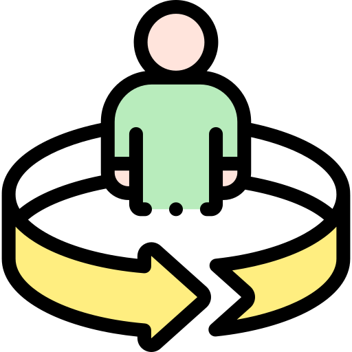

Dicas Práticas de Estudos

Organização do Tempo
- Estabeleça uma rotina diária
- Use cronogramas visuais
- Evite distrações durante o estudo

Prática Constante
- Estude um pouco todos os dias
- Use flashcards para memorização
- Faça pequenos testes consigo mesmo

Imersão no Idioma
- Assista a vídeos em japonês
- Ouça músicas e podcasts
- Tente pensar em japonês